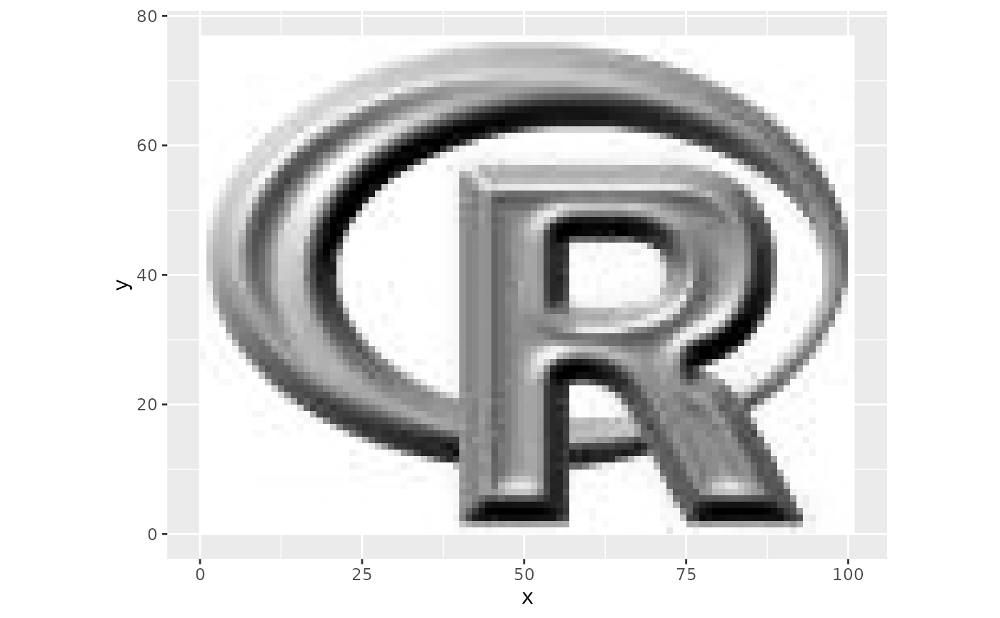
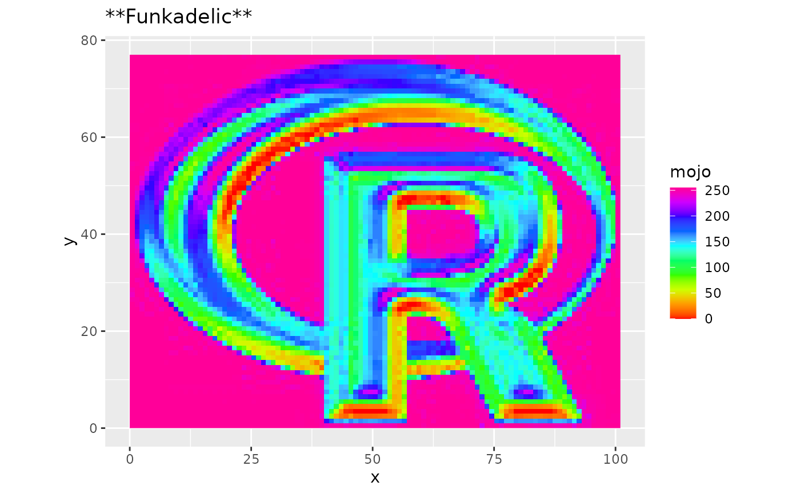
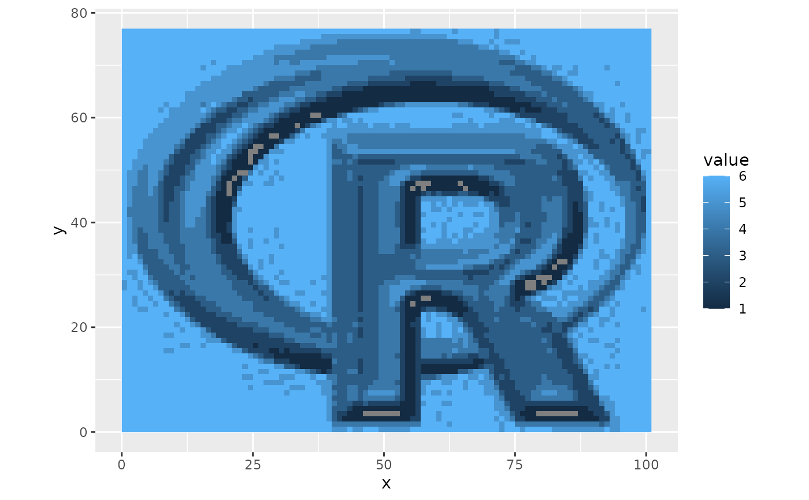
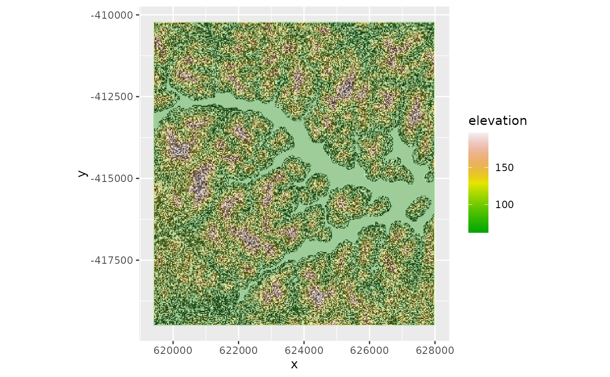

Plot single layer imagery in grey-scale. Can be used with a SpatRaster.
Usage
ggR(
img,
layer = 1,
maxpixels = 5e+05,
alpha = 1,
hue = 1,
sat = 0,
stretch = "none",
quantiles = c(0.02, 0.98),
ext = NULL,
coord_equal = TRUE,
ggLayer = FALSE,
ggObj = TRUE,
geom_raster = FALSE,
forceCat = FALSE
)Arguments
- img
SpatRaster
- layer
Character or numeric. Layername or number. Can be more than one layer, in which case each layer is plotted in a subplot.
- maxpixels
Integer. Maximal number of pixels to sample.
- alpha
Numeric. Transparency (0-1).
- hue
Numeric. Hue value for color calculation [0,1] (see
hsv). Change if you need anything else than greyscale. Only effective ifsat > 0.- sat
Numeric. Saturation value for color calculation [0,1] (see
hsv). Change if you need anything else than greyscale.- stretch
Character. Either 'none', 'lin', 'hist', 'sqrt' or 'log' for no stretch, linear, histogram, square-root or logarithmic stretch.
- quantiles
Numeric vector with two elements. Min and max quantiles to stretch to. Defaults to 2% stretch, i.e. c(0.02,0.98).
- ext
Extent object to crop the image
- coord_equal
Logical. Force addition of coord_equal, i.e. aspect ratio of 1:1. Typically useful for remote sensing data (depending on your projection), hence it defaults to TRUE. Note however, that this does not apply if (
ggLayer=FALSE).- ggLayer
Logical. Return only a ggplot layer which must be added to an existing ggplot. If
FALSEs stand-alone ggplot will be returned.- ggObj
Logical. Return a stand-alone ggplot object (TRUE) or just the data.frame with values and colors
- geom_raster
Logical. If
FALSEuses annotation_raster (good to keep aestetic mappings free). IfTRUEusesgeom_raster(andaes(fill)). See Details.- forceCat
Logical. If
TRUEthe raster values will be forced to be categorical (will be converted to factor if needed).
Value
ggObj = TRUE: | ggplot2 plot |
ggLayer = TRUE: | ggplot2 layer to be combined with an existing ggplot2 |
ggObj = FALSE: | data.frame in long format suitable for plotting with ggplot2, includes the pixel values and the calculated colors |
Details
When img contains factor values and annotation=TRUE, the raster values will automatically be converted
to numeric in order to proceed with the brightness calculation.
The geom_raster argument switches from the default use of annotation_raster to geom_raster. The difference between the two is that geom_raster performs
a meaningful mapping from pixel values to fill colour, while annotation_raster is simply adding a picture to your plot. In practice this means that whenever you
need a legend for your raster you should use geom_raster = TRUE. This also allows you to specify and modify the fill scale manually.
The advantage of using annotation_raster (geom_raster = TRUE) is that you can still use the scale_fill* for another variable. For example you could add polygons and
map a value to their fill colour. For more details on the theory behind aestetic mapping have a look at the ggplot2 manuals.
Examples
library(ggplot2)
library(terra)
## Simple grey scale annotation
ggR(rlogo)

## With linear stretch contrast enhancement
ggR(rlogo, stretch = "lin", quantiles = c(0.1,0.9))
## ggplot with geom_raster instead of annotation_raster
## and default scale_fill*
ggR(rlogo, geom_raster = TRUE)
## with different scale
ggR(rlogo, geom_raster = TRUE) +
scale_fill_gradientn(name = "mojo", colours = rainbow(10)) +
ggtitle("**Funkadelic**")

## Plot multiple layers
# \donttest{
ggR(lsat, 1:6, geom_raster=TRUE, stretch = "lin") +
scale_fill_gradientn(colors=grey.colors(100), guide = "none") +
theme(axis.text = element_text(size=5),
axis.text.y = element_text(angle=90),
axis.title=element_blank())
## Don't plot, just return a data.frame
df <- ggR(rlogo, ggObj = FALSE)
head(df, n = 3)
#> x y value layerName fill
#> 1 0.5 76.5 255 red #FFFFFFFF
#> 2 1.5 76.5 255 red #FFFFFFFF
#> 3 2.5 76.5 255 red #FFFFFFFF
## Layermode (ggLayer=TRUE)
data <- data.frame(x = c(0, 0:100,100), y = c(0,sin(seq(0,2*pi,pi/50))*10+20, 0))
ggplot(data, aes(x, y)) + ggR(rlogo, geom_raster= FALSE, ggLayer = TRUE) +
geom_polygon(aes(x, y), fill = "blue", alpha = 0.4) +
coord_equal(ylim=c(0,75))
## Categorical data
## In this case you probably want to use geom_raster=TRUE
## in order to perform aestetic mapping (i.e. a meaningful legend)
rc <- rlogo
rc[] <- cut(rlogo[[1]][], seq(0,300, 50))
ggR(rc, geom_raster = TRUE)

## Legend cusomization etc. ...
ggR(rc, geom_raster = TRUE) + scale_fill_continuous(labels=paste("Class", 1:6))
# }
## Creating a nicely looking DEM with hillshade background
terr <- terrain(srtm, c("slope", "aspect"))
hill <- shade(terr[["slope"]], terr[["aspect"]])
ggR(hill)
ggR(hill) +
ggR(srtm, geom_raster = TRUE, ggLayer = TRUE, alpha = 0.3) +
scale_fill_gradientn(colours = terrain.colors(100), name = "elevation")
